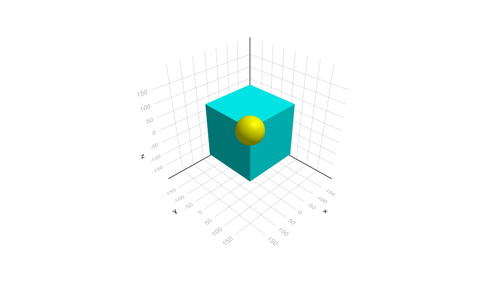
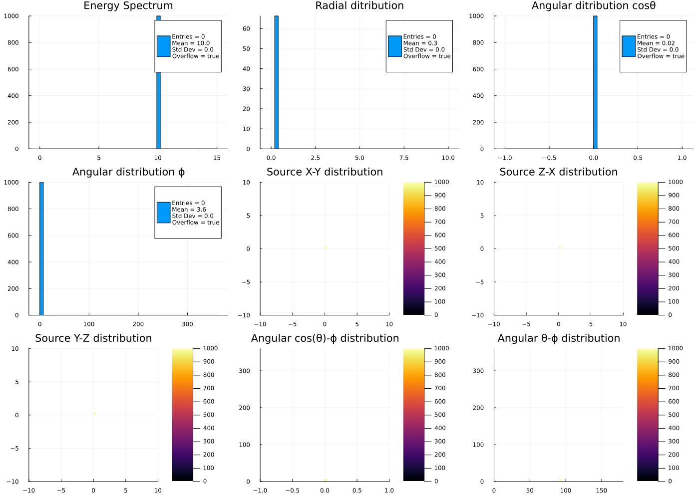
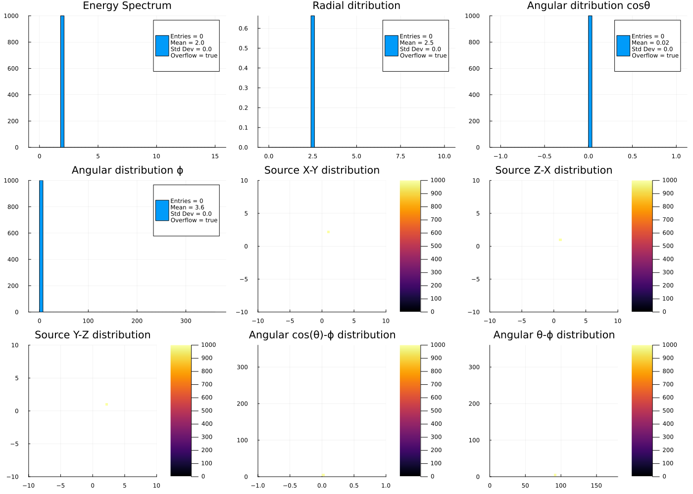
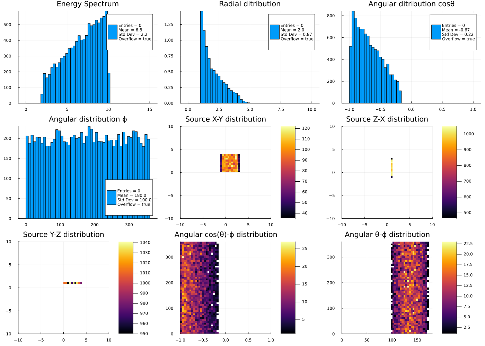
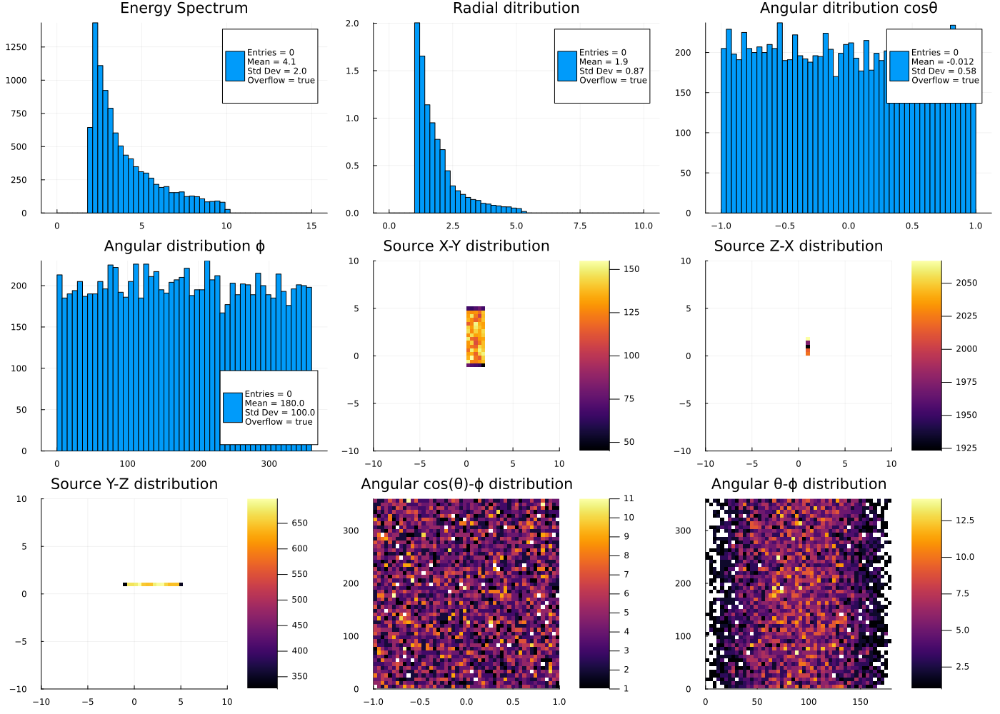
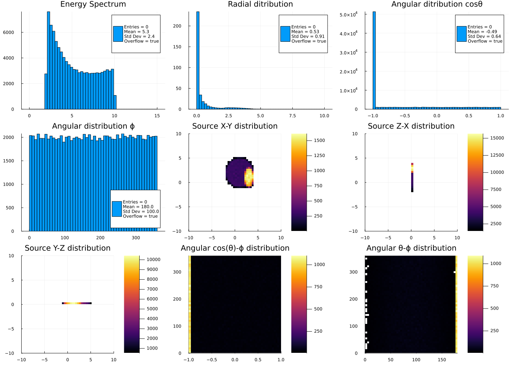

Testing G4GeneralParticleSource
See the G4GeneralParticleSource documentation for the definition of parameters.
using Parameters
using Geant4
using Geant4.PhysicalConstants
using Geant4.SystemOfUnits
using Geant4.SystemOfUnits: deg
using FHist
using Plots
#---Choose the Makie backend
#using GLMakie
#using WGLMakie
using CairoMakie
using GeometryBasics, Rotations, IGLWrap_jll # to force loding G4Vis extensionDetector definition and drawing
# Define the detector
include(joinpath(@__DIR__, "DetectorGPS.jl"))
# Draw the detector
det = GPSDetector()
world = construct(det)
img = draw(world[])
display("image/png", img)
Simulation data
The simulation data GPSSimData struct is a set of histograms that will be filled in the user tracking action and can be visualised with the function do_plot(). It is using the macro @with_kw from the Parameters.jl package to construct an instance with all the defaults.
const nbins = 50
@with_kw mutable struct GPSSimData <: G4JLSimulationData
hKEne = H1D("Energy Spectrum", nbins, 0., 15., :MeV)
hRad = H1D("Radial ditribution", nbins, 0., 10., :cm)
hAngcosθ = H1D("Angular ditribution cosθ", nbins, -1., 1.)
hAngϕ = H1D("Angular distribution ϕ", nbins, 0.,360., :deg)
hXYpos = H2D("Source X-Y distribution", nbins, -10., 10., nbins, -10., 10., (:cm, :cm))
hZXpos = H2D("Source Z-X distribution", nbins, -10., 10., nbins, -10., 10., (:cm, :cm))
hYZpos = H2D("Source Y-Z distribution", nbins, -10., 10., nbins, -10., 10., (:cm, :cm))
hcosθϕ = H2D("Angular cos(θ)-ϕ distribution", nbins, -1., 1., nbins, 0., 360., (:nounit, :deg))
hθϕ = H2D("Angular θ-ϕ distribution", nbins, 0., 180., nbins, 0., 360., (:deg, :deg))
end
#---merge and empty functions----------------------------------------------------------------------
function Base.merge!(x::D, y::D) where D <: G4JLSimulationData
for f in fieldnames(D)
merge!(getfield(x,f), getfield(y,f))
end
end
function Base.empty!(x::D) where D <: G4JLSimulationData
for f in fieldnames(D)
empty!(getfield(x,f))
end
end
#---plot function----------------------------------------------------------------------------------
function do_plot(data::GPSSimData)
img = Plots.plot(layout=(3,3), show=true, size=(1400,1000))
for (i,fn) in enumerate(fieldnames(GPSSimData))
h = getfield(data, fn)
Plots.plot!(subplot=i, h.hist, title=h.title, show=true, cgrad=:plasma)
end
return img
enddo_plot (generic function with 1 method)User Actions
The begin and end run action is used to initialise and sum (merge) the simulation data. The tracking action is used to fill the histograms.
#---Run Actions------------------------------------------------------------------------------------
function beginrun(::G4Run, app::G4JLApplication)::Nothing
data = getSIMdata(app)
empty!(data)
nothing
end
function endrun(::G4Run, app::G4JLApplication)::Nothing
#---end run action is called for each workwer thread and the master one
if G4Threading!G4GetThreadId() == -1
data = app.simdata[1]
#---This is the master thread, so we need to add all the simuation results-----------------
for d in app.simdata[2:end]
merge!(data, d)
end
end
end
#---Tracking Actions-----------------------------------------------------------------------------
function pretrackaction(track::G4Track, app::G4JLApplication)::Nothing
data = getSIMdata(app)
ekin = track |> GetKineticEnergy
vertex = track |> GetPosition
direction = track |> GetMomentumDirection
weight = track |> GetWeight
x = vertex |> getX
y = vertex |> getY
z = vertex |> getZ
θ = direction |> getTheta
ϕ = direction |> getPhi
ϕ < 0 && (ϕ += 2π)
r = vertex |> mag
dr = binedges(data.hRad.hist).step |> Float64
dv = 4π * r^2 * dr
# fill histograms
push!(data.hKEne, ekin)
push!(data.hRad, r, 1.0/dv)
push!(data.hAngcosθ, cos(θ))
push!(data.hAngϕ, ϕ)
push!(data.hXYpos, x, y)
push!(data.hZXpos, z, x)
push!(data.hYZpos, y, z)
push!(data.hcosθϕ, cos(θ), ϕ)
push!(data.hθϕ, θ, ϕ)
nothing
endpretrackaction (generic function with 1 method)Particle Generator
We create a G4JLGeneralParticleSource particle generator. The initial run will be equivalent to the G4JLParticleGun with the same parameters.
#---Particle Gun initialization--------------------------------------------------------------------
gps = G4JLGeneralParticleSource(particle = "geantino",
energy = 10MeV,
direction = G4ThreeVector(1,0,0),
position = G4ThreeVector(1,2,1))G4JLGeneralParticleSource("GPS", Geant4.G4JLGPSData(nothing, @NamedTuple{particle::String, energy::Float64, direction::Geant4.CLHEP!Hep3VectorAllocated, position::Geant4.CLHEP!Hep3VectorAllocated}[(particle = "geantino", energy = 10.0, direction = G4ThreeVector(1.0,0.0,0.0), position = G4ThreeVector(1.0,2.0,1.0))], false, false), Geant4.initGPS, Geant4.var"#gen#22"(), G4JLGeneratorAction[])Application definition, configuration and initialization
#---Create the Application-------------------------------------------------------------------------
app = G4JLApplication(detector = GPSDetector(), # detector with parameters
simdata = GPSSimData(), # simulation data structure
generator = gps, # primary particle generator
nthreads = VERSION > v"1.9" ? 4 : 0, # number of threads (MT)
physics_type = FTFP_BERT, # what physics list to instantiate
#----Actions--------------------------------
pretrackaction_method = pretrackaction, # pre-tracking action
beginrunaction_method = beginrun, # begin-run action (initialize counters and histograms)
endrunaction_method = endrun, # end-run action (print summary)
);
configure(app)
initialize(app)**************************************************************
Geant4 version Name: geant4-11-02 [MT] (8-December-2023)
<< in Multi-threaded mode >>
Copyright : Geant4 Collaboration
References : NIM A 506 (2003), 250-303
: IEEE-TNS 53 (2006), 270-278
: NIM A 835 (2016), 186-225
WWW : http://geant4.org/
**************************************************************
G4Material WARNING: duplicate name of material Vacuum
G4Material WARNING: duplicate name of material Aluminium
G4Material WARNING: duplicate name of material Silicon oxideTests
Taken from examples\extended\eventgenerator\exgps\macros
Initial Particle Gun
beamOn(app, 1000)
img = do_plot(app.simdata[1])
display("image/png", img)[33m[1m┌ [22m[39m[33m[1mWarning: [22m[39mWeights was probably used but StatsBase.Histogram doesn't record # of entries
[33m[1m└ [22m[39m[90m@ FHist ~/.julia/packages/FHist/smrpp/src/FHist.jl:35[39m
[33m[1m┌ [22m[39m[33m[1mWarning: [22m[39mWeights was probably used but StatsBase.Histogram doesn't record # of entries
[33m[1m└ [22m[39m[90m@ FHist ~/.julia/packages/FHist/smrpp/src/FHist.jl:35[39m
[33m[1m┌ [22m[39m[33m[1mWarning: [22m[39mWeights was probably used but StatsBase.Histogram doesn't record # of entries
[33m[1m└ [22m[39m[90m@ FHist ~/.julia/packages/FHist/smrpp/src/FHist.jl:35[39m
[33m[1m┌ [22m[39m[33m[1mWarning: [22m[39mWeights was probably used but StatsBase.Histogram doesn't record # of entries
[33m[1m└ [22m[39m[90m@ FHist ~/.julia/packages/FHist/smrpp/src/FHist.jl:35[39m
Test01
/gps/particle proton
/gps/pos/type Point
/gps/pos/centre 1. 2. 1. cm
/gps/ang/type iso
/gps/energy 2. MeVreinitialize(app.generator; particle="geantino",
energy=2MeV,
pos=(type="Point", centre=G4ThreeVector(1cm,2cm,1cm)),
ang=(type="iso"))
beamOn(app, 1000)
img = do_plot(app.simdata[1])
display("image/png", img)[33m[1m┌ [22m[39m[33m[1mWarning: [22m[39mWeights was probably used but StatsBase.Histogram doesn't record # of entries
[33m[1m└ [22m[39m[90m@ FHist ~/.julia/packages/FHist/smrpp/src/FHist.jl:35[39m
[33m[1m┌ [22m[39m[33m[1mWarning: [22m[39mWeights was probably used but StatsBase.Histogram doesn't record # of entries
[33m[1m└ [22m[39m[90m@ FHist ~/.julia/packages/FHist/smrpp/src/FHist.jl:35[39m
[33m[1m┌ [22m[39m[33m[1mWarning: [22m[39mWeights was probably used but StatsBase.Histogram doesn't record # of entries
[33m[1m└ [22m[39m[90m@ FHist ~/.julia/packages/FHist/smrpp/src/FHist.jl:35[39m
[33m[1m┌ [22m[39m[33m[1mWarning: [22m[39mWeights was probably used but StatsBase.Histogram doesn't record # of entries
[33m[1m└ [22m[39m[90m@ FHist ~/.julia/packages/FHist/smrpp/src/FHist.jl:35[39m
Test02
# square plane source
/gps/pos/type Plane
/gps/pos/shape Square
/gps/pos/centre 1. 2. 1. cm
/gps/pos/halfx 2. cm
/gps/pos/halfy 2. cm
#cosine-law distribution
/gps/ang/type cos
# linear energy distr.
/gps/ene/type Lin
/gps/ene/min 2. MeV
/gps/ene/max 10. MeV
/gps/ene/gradient 1.
/gps/ene/intercept 1.reinitialize(app.generator; particle="geantino",
ene=(type="Lin", min=2MeV, max=10MeV, gradient=1, intercept=1),
pos=(type="Plane", shape="Square", centre=G4ThreeVector(1cm,2cm,1cm), halfx=2cm, halfy=2cm),
ang=(type="cos",mintheta=10deg, maxtheta=80deg))
beamOn(app, 10000)
img = do_plot(app.simdata[1])
display("image/png", img)[33m[1m┌ [22m[39m[33m[1mWarning: [22m[39mWeights was probably used but StatsBase.Histogram doesn't record # of entries
[33m[1m└ [22m[39m[90m@ FHist ~/.julia/packages/FHist/smrpp/src/FHist.jl:35[39m
[33m[1m┌ [22m[39m[33m[1mWarning: [22m[39mWeights was probably used but StatsBase.Histogram doesn't record # of entries
[33m[1m└ [22m[39m[90m@ FHist ~/.julia/packages/FHist/smrpp/src/FHist.jl:35[39m
[33m[1m┌ [22m[39m[33m[1mWarning: [22m[39mWeights was probably used but StatsBase.Histogram doesn't record # of entries
[33m[1m└ [22m[39m[90m@ FHist ~/.julia/packages/FHist/smrpp/src/FHist.jl:35[39m
[33m[1m┌ [22m[39m[33m[1mWarning: [22m[39mWeights was probably used but StatsBase.Histogram doesn't record # of entries
[33m[1m└ [22m[39m[90m@ FHist ~/.julia/packages/FHist/smrpp/src/FHist.jl:35[39m
Test03
#rectangle plane source
/gps/pos/type Plane
/gps/pos/shape Rectangle
/gps/pos/centre 0. 2. 1. cm
/gps/pos/halfx 1. cm
/gps/pos/halfy 3. cm
# isotropic angular distri.
/gps/ang/type iso
# power-law energy distr.
/gps/ene/type Pow
/gps/ene/min 2. MeV
/gps/ene/max 10. MeV
/gps/ene/alpha -2.reinitialize(app.generator; particle="geantino",
ene=(type="Pow", min=2MeV, max=10MeV, alpha=-2),
pos=(type="Plane", shape="Rectangle", centre=G4ThreeVector(1cm,2cm,1cm), halfx=1cm, halfy=3cm),
ang=(type="iso", mintheta=0deg, maxtheta=180deg))
beamOn(app, 10000)
img = do_plot(app.simdata[1])
display("image/png", img)[33m[1m┌ [22m[39m[33m[1mWarning: [22m[39mWeights was probably used but StatsBase.Histogram doesn't record # of entries
[33m[1m└ [22m[39m[90m@ FHist ~/.julia/packages/FHist/smrpp/src/FHist.jl:35[39m
[33m[1m┌ [22m[39m[33m[1mWarning: [22m[39mWeights was probably used but StatsBase.Histogram doesn't record # of entries
[33m[1m└ [22m[39m[90m@ FHist ~/.julia/packages/FHist/smrpp/src/FHist.jl:35[39m
[33m[1m┌ [22m[39m[33m[1mWarning: [22m[39mWeights was probably used but StatsBase.Histogram doesn't record # of entries
[33m[1m└ [22m[39m[90m@ FHist ~/.julia/packages/FHist/smrpp/src/FHist.jl:35[39m
[33m[1m┌ [22m[39m[33m[1mWarning: [22m[39mWeights was probably used but StatsBase.Histogram doesn't record # of entries
[33m[1m└ [22m[39m[90m@ FHist ~/.julia/packages/FHist/smrpp/src/FHist.jl:35[39m
Test04 and Test05 Together
- source 1
#circular plane source
/gps/pos/type Plane
/gps/pos/shape Circle
/gps/pos/centre 2. 1. 0. cm
/gps/pos/radius 3. cm
# cosine-law
/gps/ang/type cos
# exponential energy distri.
/gps/ene/type Exp
/gps/ene/min 2. MeV
/gps/ene/max 10. MeV
/gps/ene/ezero 2.- source 2
# ellipse plane source
/gps/pos/type Plane
/gps/pos/shape Ellipse
/gps/pos/centre 3. 1. 0. cm
/gps/pos/halfx 1. cm
/gps/pos/halfy 2. cm
#isotropic angular distribution
/gps/ang/type iso
# brems energy distr.
/gps/ene/type Brem
/gps/ene/min 2. MeV
/gps/ene/max 10. MeV
/gps/ene/temp 2e12reinitialize(app.generator; sources = [(particle="geantino", intensity=0.5,
ene=(type="Exp", min=2MeV, max=10MeV, ezero=2.),
pos=(type="Plane", shape="Circle", centre=G4ThreeVector(1cm,2cm,0cm), radius=3cm),
ang=(type="cos", mintheta=0deg, maxtheta=180deg)),
(particle="geantino", intensity=0.5,
ene=(type="Brem", min=2MeV, max=10MeV, temp=2e12),
pos=(type="Plane", shape="Ellipse", centre=G4ThreeVector(3cm,1cm,0cm), halfx=1cm, halfy=2cm),
ang=(type="iso", mintheta=0deg, maxtheta=180deg))])
beamOn(app, 100000)
img = do_plot(app.simdata[1])
display("image/png", img)[33m[1m┌ [22m[39m[33m[1mWarning: [22m[39mWeights was probably used but StatsBase.Histogram doesn't record # of entries
[33m[1m└ [22m[39m[90m@ FHist ~/.julia/packages/FHist/smrpp/src/FHist.jl:35[39m
[33m[1m┌ [22m[39m[33m[1mWarning: [22m[39mWeights was probably used but StatsBase.Histogram doesn't record # of entries
[33m[1m└ [22m[39m[90m@ FHist ~/.julia/packages/FHist/smrpp/src/FHist.jl:35[39m
[33m[1m┌ [22m[39m[33m[1mWarning: [22m[39mWeights was probably used but StatsBase.Histogram doesn't record # of entries
[33m[1m└ [22m[39m[90m@ FHist ~/.julia/packages/FHist/smrpp/src/FHist.jl:35[39m
[33m[1m┌ [22m[39m[33m[1mWarning: [22m[39mWeights was probably used but StatsBase.Histogram doesn't record # of entries
[33m[1m└ [22m[39m[90m@ FHist ~/.julia/packages/FHist/smrpp/src/FHist.jl:35[39m